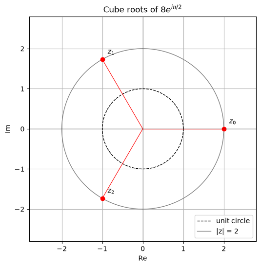

Complex Roots
Let's begin from the basics of complex roots. We are able to find the roots of complex numbers using the polar form of complex numbers. Here's the link to the notes on the polar form of complex numbers.
Consider a point $z = re^{i\theta}$ in the complex plane, where $r$ is the modulus of $z$ and $\theta$ is the argument of $z$. Should I move $2k\pi$ forward or backward, the point $z$ will still be the same. This is because $e^{i\theta}$ is periodic with period $2\pi$.
Therefore, two nonzero complex numbers $z_1$ and $z_2$ are equal if and only if they have the same modulus and their arguments differ by a multiple of $2\pi$. Thus, if $z_1 = r_1 e^{i\theta_1}$ and $z_2 = r_2 e^{i\theta_2}$, then $z_1 = z_2$ if and only if $r_1 = r_2$ and $\theta_1 = \theta_2 + 2k\pi$, where $k$ is an integer $(k = 0, \pm 1, \pm 2, \ldots)$.
Now, to find the $n$-th roots of a nonzero complex number $z_0 = r_0 e^{i\theta_0}$, we look for every number $z = re^{i\theta}$ such that $z^n = z_0$, and the condition above must hold. This implies that
$$r^n e^{in\theta} = r_0 e^{i\theta_0}$$
which means that $r^n = r_0$ and $n\theta = \theta_0 + 2k\pi$, where $k$ is an integer $(k = 0, \pm 1, \pm 2, \ldots)$. Hence
$$r = \sqrt[n]{r_0}$$
and
$$\theta = \frac{\theta_0 + 2k\pi}{n}$$
The complex number $z_0 = r_0 e^{i\theta_0}$ has $n$ distinct $n$-th roots, given by
$$c_k = \sqrt[n]{r_0} e^{i(\frac{\theta_0 + 2k\pi}{n})}$$
for $k = 0, 1, 2, \ldots, n-1$. Other integer values of $k$ only repeat these roots, since $k$ and $k + n$ give arguments that differ by exactly $2\pi$.
Here $\sqrt[n]{r_0}$ is the modulus of the $n$-th roots of $z_0$ and $\frac{\theta_0 + 2k\pi}{n}$ is the argument of the $n$-th roots of $z_0$. The $n$ distinct $n$-th roots of $z_0$ are evenly spaced around a circle of radius $\sqrt[n]{r_0}$ in the complex plane, with an angular separation of $\frac{2\pi}{n}$ between each root.
The principal $n$-th root of $z_0$ is the root corresponding to $k = 0$, taking $\theta_0 = \text{Arg}(z_0)$, and it is given by
$$c_0 = \sqrt[n]{r_0} e^{i(\frac{\theta_0}{n})}$$
What does it even mean to find the roots of a complex number? What does it help us with? What are they going to be used for?
We see that the $n$-th roots, when raised to the power of $n$, will give us back the original complex number. On their own, that's the information we have and they're not very useful. However, they give us the solutions of equations of the form $z^n = z_0$, and they appear when solving polynomial equations with complex coefficients. For example, the quadratic formula needs a square root of a complex number whenever the discriminant is complex. These cases would be treated in subsequent notes.
Let's consider a ceiling fan as well. If I have my circle drawn out, I can find the $n$-th roots of a complex number where $n$ corresponds to the blades of a fan. With the property of the roots being equally separated on the circular plane, each root is a point on the circle that a blade passes through.
Example
Let's take an example. Say we want to find the cube roots of $z_0 = 8e^{i\frac{\pi}{2}}$. We can use the above formula to find the three distinct cube roots of $z_0$.
The modulus of $z_0$ is $r_0 = 8$ and the argument of $z_0$ is $\theta_0 = \frac{\pi}{2}$. Therefore, the three distinct cube roots of $z_0$ are given by
$$c_k = \sqrt[3]{8} e^{i(\frac{\frac{\pi}{2} + 2k\pi}{3})}$$
for $k = 0, 1, 2$, that is,
- $c_0 = 2e^{i\frac{\pi}{6}}$
- $c_1 = 2e^{i\frac{5\pi}{6}}$
- $c_2 = 2e^{i\frac{3\pi}{2}}$

import numpy as np
import matplotlib.pyplot as plt
r_0 = 8
theta_0 = 0
n = 3
k = np.arange(n)
n_roots = r_0**(1/n) * np.exp(1j * (theta_0 + 2*np.pi*k) / n)
angle_spacing = np.linspace(0, 2*np.pi, 400)
plt.subplots(figsize=(6, 6))
plt.plot(np.cos(angle_spacing), np.sin(angle_spacing), 'k--', lw=1, label='unit circle')
plt.plot(2*np.cos(angle_spacing), 2*np.sin(angle_spacing), color='gray', lw=1, label='|z| = 2')
for i, z in enumerate(n_roots):
plt.plot([0, z.real], [0, z.imag], 'r-', lw=0.8)
plt.plot(z.real, z.imag, 'ro')
plt.annotate(f'$z_{i}$', (z.real, z.imag), textcoords='offset points', xytext=(8, 8))
plt.xlim(-2.8, 2.8)
plt.ylim(-2.8, 2.8)
plt.axhline(0, color='k', lw=0.2)
plt.axvline(0, color='k', lw=0.2)
plt.xlabel('Re')
plt.ylabel('Im')
plt.title('Cube roots of $8e^{i\\pi/2}$')
plt.legend(loc='lower right')
plt.grid()
plt.show()